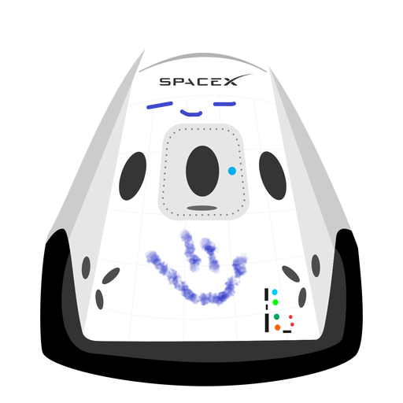

Hyperblog
tu blog de cabecera
Modificaremos todo el texto para los cambios recientes
Aqui tendra lugar toda la imformación relebante del post

Un blog es un sitio web que presenta contenido regularmente en forma de entradas o posts organizados cronológicamente. Los bloggers comparten artículos, opiniones o multimedia sobre temas que les interesan, permitiendo a los lectores interactuar mediante comentarios y compartir en redes sociales. Los blogs son utilizados para expresión personal, divulgación de conocimientos, promoción de productos y servicios, y existen en una variedad de nichos.
suscribete y dale like